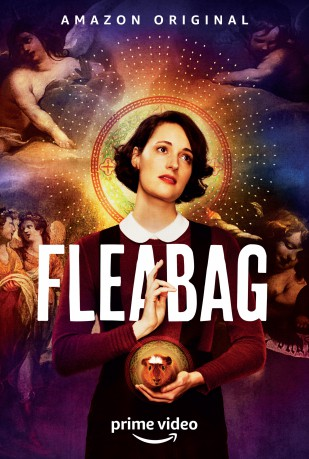

")
 gesehen am 06.07.2019
gesehen am 06.07.2019 
 IMDB-Wertung: 8.6 / 10
IMDB-Wertung: 8.6 / 10  Tomatometer: 100
Tomatometer: 100  Metascore:
Metascore: 
Fleabag, eine leicht chaotische junge Frau, ist anders als andere Frauen in ihrem Alter. Sie schaut mit Vorliebe Pornos, schläft mit jedem Typen der ihr auch nur zu nahe kommt, lehnt jegliche Hilfe im Alltag ab und pumpt sich regelmäßig Geld, ohne es zurückzuzahlen. Mit all ihren fragwürdigen Eigenschaften stößt sie im modernen Großstadtdschungel von London jedoch des Öfteren an ihre Grenzen ...
Jahr: 2016
Dauer: 26 Minuten
FSK:
Land: England Studio: BBC ThreeTonspuren: - , - , - , - , - ,
Untertitel: Deutsch, Englisch,
Auflösung: 720p (1280x534) Größe: 665 MB
Genre: Drama, Komödie, TV-Serie
Regisseur: Harry Bradbeer, Tim Kirkby
Drehbuch: Phoebe Waller-Bridge
Soundtrack:
Darsteller:
 Phoebe Waller-Bridge als Fleabag, 12 episodes, 2016-2019
Phoebe Waller-Bridge als Fleabag, 12 episodes, 2016-2019 Olivia Colman als Godmother, 9 episodes, 2016-2019
Olivia Colman als Godmother, 9 episodes, 2016-2019 Bill Paterson als Dad, 9 episodes, 2016-2019
Bill Paterson als Dad, 9 episodes, 2016-2019 Brett Gelman als Martin, 8 episodes, 2016-2019
Brett Gelman als Martin, 8 episodes, 2016-2019 Andrew Scott als The Priest, 6 episodes, 2019
Andrew Scott als The Priest, 6 episodes, 2019 Hugh Skinner als Harry, 6 episodes, 2016-2019
Hugh Skinner als Harry, 6 episodes, 2016-2019 Ben Aldridge als Arsehole Guy, 5 episodes, 2016-2019
Ben Aldridge als Arsehole Guy, 5 episodes, 2016-2019 Anthony Welsh als Jack, 2 episodes, 2016
Anthony Welsh als Jack, 2 episodes, 2016 Ray Fearon als Hot Misogynist, 2 episodes, 2019
Ray Fearon als Hot Misogynist, 2 episodes, 2019 Kristin Scott Thomas als Belinda, 1 episode, 2019
Kristin Scott Thomas als Belinda, 1 episode, 2019 Fiona Shaw als Counsellor, 1 episode, 2019
Fiona Shaw als Counsellor, 1 episode, 2019 Jenny Galloway als Retreat Leader, 1 episode, 2016
Jenny Galloway als Retreat Leader, 1 episode, 2016 Kevin McNally als Older Man, 1 episode, 2016
Kevin McNally als Older Man, 1 episode, 2016 Jeff Mirza als Shop Owner, 1 episode, 2016
Jeff Mirza als Shop Owner, 1 episode, 2016 Sophie Karl als Yoga Student (uncredited), 1 episode, 2016
Sophie Karl als Yoga Student (uncredited), 1 episode, 2016Datei: X:\HD-Serien\Fleabag\S01\Fleabag S01E01.mkv seit 06.07.2019
Festplatte: HD Serien(A-H)
 Es gibt insgesamt 182 Filme in der Gruppe 'HD-Serien'
Es gibt insgesamt 182 Filme in der Gruppe 'HD-Serien'